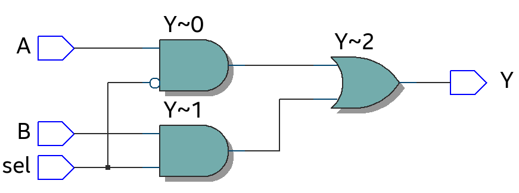
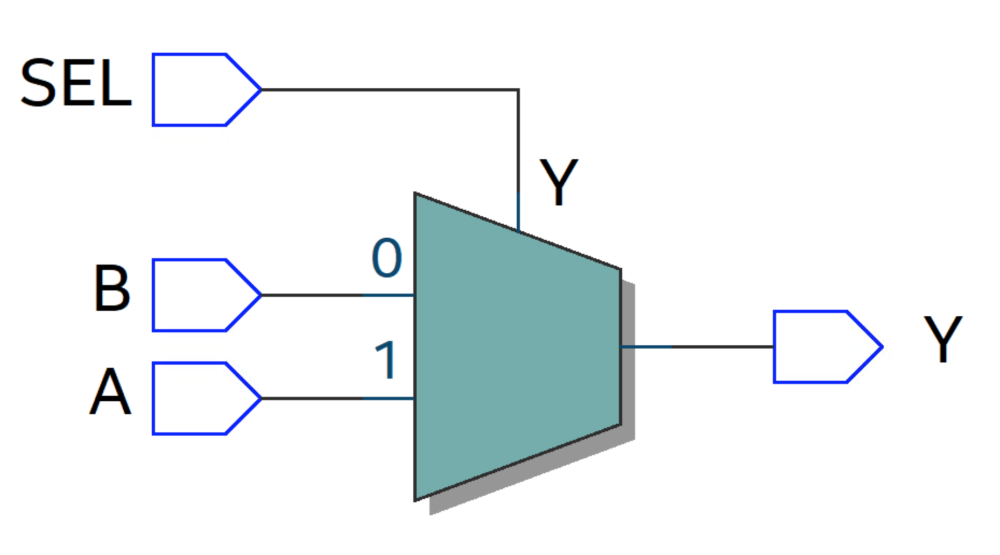

2.8. Description styles#
The architecture body of a VHDL description can be divided in two sections:
the declaration section,
and the section between the keywords
beginandend architecture.
architecture rtl of example is
-- Declaration section
begin
-- The internal implementation/description of the entity's functinality
-- All statements are concurrent statments
end architecture;
The declaration section is used to declare any objects that should only be used within this architecture. That is, these objects are not visible outside of the architecture. The section between begin and end is the area where the functionality of the system or modules is described. Any VHDL statement within this area are is concurrent statements, which means that each statement will be translated into a piece of logic that will be implemented into hardware resources of the FPGA.
As mentioned in the section History, VHDL was originally developed to document and describe the behaviour of a circuit. Tools to synthesize a VHDL description into actual hardware were only developed later, and only for a limted part of the language. Today VHDL is most commonly used to:
Write a VHDL description that can be synthesized to run on an FPGA.
Simulate and verify another VHDL description (usually another description that can be synthesized to hardware). In this case the extended VHDL language can be used.
The following coding styles are usually considered when writing a VHDL description:
These are not exclusive to each other, but are instead often combined. For a VHDL decsription to be synthesized into FPGA hardware, the description has to be limited into using a syntax that can be translated into combinational logic operations and storage units (registers). This is referred to as a Register Transfer Level (RTL) description.
2.8.1. Structural#
A structural description is used when the architecture is used to interconnected submodules or components (“black boxes”). Relevant analogies can be the schematic entry, the bread board, or printed circuit board (PCB), which are used to connect together components using wires or PCB traces. Fig. 2.10 shows an example of a complex PCB consisting of many interconnected ICs. The PCB does not reveal anything about the behaviour of the design, only how they are connected together.
{kind=link}
Fig. 2.10 An example of a complex PCB layout connecting multiple ICs together on a PCB. The PCB is designed by Jon Wikne (UiO) in 1989 and was used for the readout of a detector at CERN. The board is approximately 40 cm x 40 cm, and today this design could easily be implemented into a single FPGA.#
Similarly, a structural design approach in VHDL is used to specify how components are interconnected. Figure Fig. 2.11 shows how the structural appoarch can be used to achieve a hierarchical design. Here the architecture makes use of other components that can be interconnected and where each component also has an internal entity and architecture description.
{kind=link}
Fig. 2.11 Hierarchical structure of a design.#
In VHDL the keywords component and port map are used to build structural designs. An example is shown below.
library IEEE;
use IEEE.std_logic_1164.all;
entity struct_ex is
port (
A_IN : in std_logic;
B_IN : in std_logic;
C_IN : in std_logic;
Y_OUT : out std_logic
);
end struct_ex;
architecture structural of struct_ex is
-- Declare signals internal to this architecture
-- These signals will be used to connect together the components declared below.
signal int1 : std_logic;
signal int2 : std_logic;
signal int3 : std_logic;
-- declare components which has already been described in another file
component AND_GATE
port (
A, B : in std_logic;
Y : out std_logic
);
end component;
component OR_GATE
port (
A, B, C : in std_logic;
Y : out std_logic
);
end component;
begin
-- connect the components together using the VHDL port map functionality.
A1 : AND_GATE port map(A => A_IN, B => B_IN, Y => int1);
A2 : AND_GATE port map(A => B_IN, B => C_IN, Y => int2);
A3 : AND_GATE port map(A => A_IN, B => C_IN, Y => int3);
O1 : OR_GATE port map(A => int1, B => int2, C => int3, Y => Y_OUT);
end architecture structural;
This structural description makes use of two different components, a 2-input and-gate and a 3-input or-gate. The components and signals used to interconnect the components are declared in the declaration section of the architecture while the implementation of the interconnections are described as concurrent statements between the begin and end architecture keywords. The port map statement is used to connect the ports of the component to the internal signals of the top level architecture. The and-gate and or-gate are described in a separate VHDL file. The advantage of an hierarchical approach is that components can easily be reused. E.g., the implementation above makes use of three and-gates and one or-gate to achieve the design shown in figure Fig. 2.12. However, the VHDL description above does not reveal anything about the functionality or behaviour of the design, only how the components are interconnected.
{kind=link}
Fig. 2.12 Schematic illustration of basic TMR logic.#
2.8.2. Data-flow#
Data-flow modelling describes the flow of data using concurrent statements between the begin and end architecture area. Concurrent statements are executed in parallell and the order of the statements is irrelevant. The execution is event driven, which means that the statment is only executed if there is a transition/change on the input. In other words, whenever there is a change in any of the signals listed on the right-hand side of the signal assigment operator, the signal on the left-hand side of the operator is re-evaluated.
-- order of statements is irrelevant
-- Alternative A
B <= C; --evaluated if transition on C
A <= B; --evaluated if transition on B
-- is equivalent to
-- Alternative B
A <= B;
B <= C;
Both alternatives above will generate the same logic. However, in a case where there are multiple drivers for the same signal, this will result in a conflict that must be resolved.
architecture concurrent of multiple is
signal Z, A, B, C, D : std_logic;
begin
Z <= A and B;
Z <= C and D; -- Multiple signal assignments to the same signal are not allowed
end concurrent;
For simulation purposes this will be resolved by the resolution table of the std_logic type. However, this will not work when synthesized to hardware.
You then have to make sure that it is either one or the other that is assigned at any given time. E.g., using a conditional statement like shown below.
architecture concurrent of multiple is
signal Z, A, B, C, D : std_logic;
signal ena: std_logic;
begin
Z <= (A and B) when ena = '1' else (C and D);
end concurrent;
The design above also shows an example of a conditional signal assignment using the when - else statement. The syntax for this statement is shown below:
result_signal <= expression_1 when condition_1 else
expression_2 when condition_2 else
expression_3 when condition_3 else
:
expression_n;
Another useful syntax that can be used as a concurrent statement in VHDL is the selected signal assignment:
with input_signal select
result_signal <= expression_1 when condition_1,
expression_2 when condition_2,
expression_3 when condition_3,
:
expression_n when others;
The main difference between the when - else and with - select syntax is that the latter makes a decision based on the condition of only one input, while for the when - else multiple and different inputs can be evaluated. A when - else syntex can therefore be used to implement a nested conditional statement. A with - select corresponds more to a multiplexer functionality.
2.8.3. Behavioral#
A behavioral approach models the circuit at the highest absraction level. It describes how the circuit should behave, and can be considered to be more of an algorithmic appoarch – without considering how it may be implemented in hardware.
While the behavioral description style is extensively used to write test benches, it can be argued that it also can be used to implement hardware if constrained to a limited set the the VHDL language. The part of the VHDL langauge that can be tranlasted into hardware – logic gates and registers. This is further discussed in the section Register Transfer Level (RTL).
Consider the example below where two different VHDL descriptions results in the same logic behavior. The first descriptions uses a basic data flow approach with logic operations on the signals. The second description uses a process statement with an if-else syntax to decide which of the signals A or B is connected to Y. You can read more about the process statement in Section 2.10.
Entity description:
entity mux is
port(
A, B, SEL : in std_logic;
Y : out std_logic
);
Example 1: Data-flow description:
architecture description_model of mux is
begin
Y <= ((not sel) and A ) or (sel and B);
end architecture;
Example 2: A higher abstraction level description using the VHDL process statement:
architecture description_model of mux is
begin
process(sel,A,B) is
begin
if sel = '0' then
Y <= A;
else
Y <= B;
end if;
end process;
end architecture;
Question
Both examples above will result in the same logic. Can you tell what type of logic behaviour or functionallity these description will implement?
Answer!
Both describe the behaviour of a multiplexer where A is connected to Y if sel is low and B is connected to Y if sel is high. However, if you run these two descriptions through Quartus and look at the intepreted results in Quartus’ netlist viewer, you would see the to different results shown below.
Example 1
{kind=link}
Example 2
{kind=link}
For Example 1, Quartus has understood the implemention on a gate level, while for Example 2, Quartus has in fact interpreted the behaviour as a multiplexer. Which is at a higher abstraction level. The focus in Example 2 is more on the functionality or behaviour of the design rather than how it will be implementation in hardware.
2.8.4. Register Transfer Level (RTL)#
An FPGA is a matrix of interconnected logic blocks. A simplified schematic representation of a logic block is shown in Fig. 2.13. The two essential parts of a logic block is the look-up table (LUT) and the register. These can be configured to implement combinational and sequential logic.
{kind=link}
Fig. 2.13 A basic schematic representation of the basic building block of and FPGA: The Logic block.#
The process of translating or converting a VHDL description into FPGA hardware is referred to as FPGA synthesis. The task of the synthesis tool is to map the desribed functionality into the available hardware resources such LUTs and registers. LUTs for combinational logic and registers to store the result of a combinational operation. The result is system that can be describe in terms of units of data storage (registers) and transformation of date between these storage units(combinational logic).[Ash10]. This is referred to as a Register Transfer Level (RTL) description. Fig. 2.14 illustrates this flow or transfer of data between registers.
{kind=link}
Fig. 2.14 Illustration of the Register Transfer Level.#
RTL is the style of code that is required for a synthesis tool to translate the VHDL description into hardware. RTL can be a mixture of the structural, data-flow, and a limited set of the behavioral styles.
Supplementary suggested reading:
Chapter 5, section 5.1 and 5.2, and chapter 9 and 10 in Mealy and Teppero, Free Range VHDL.
Chapter 5, section 5.6 Structural design using components in LaMeres [LaM19].